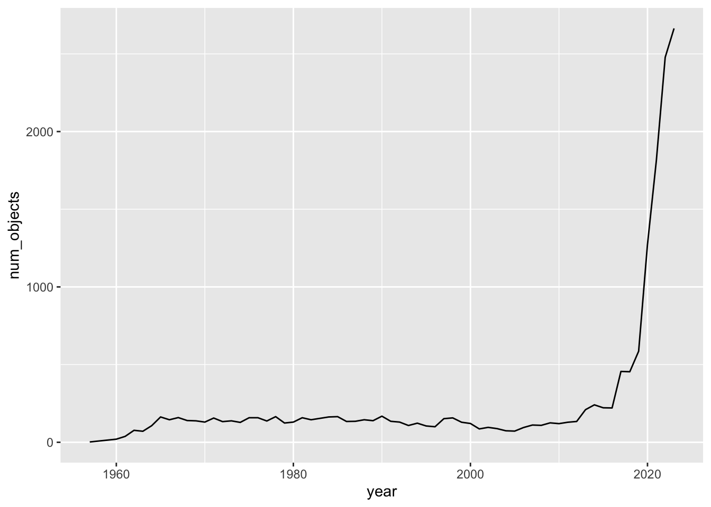
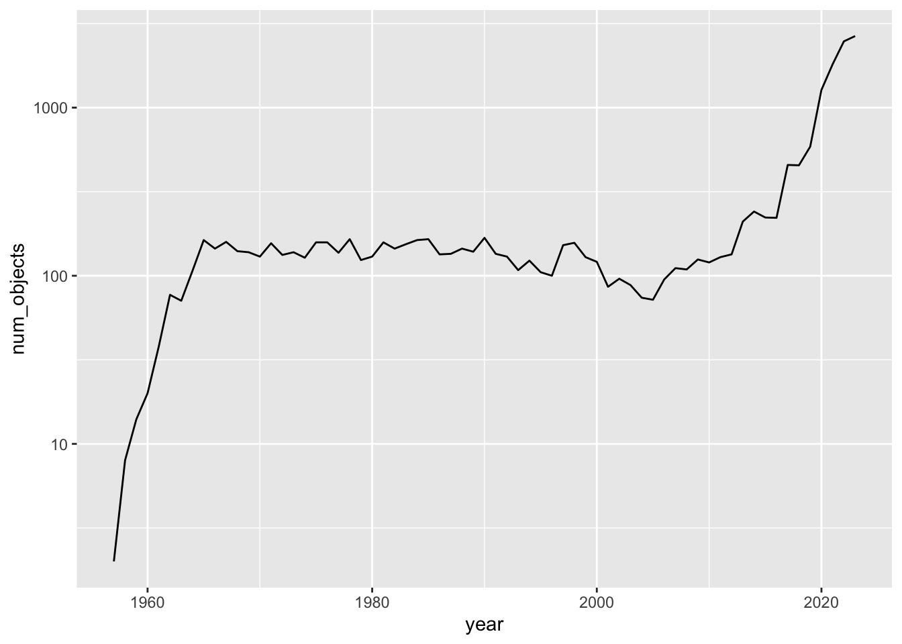
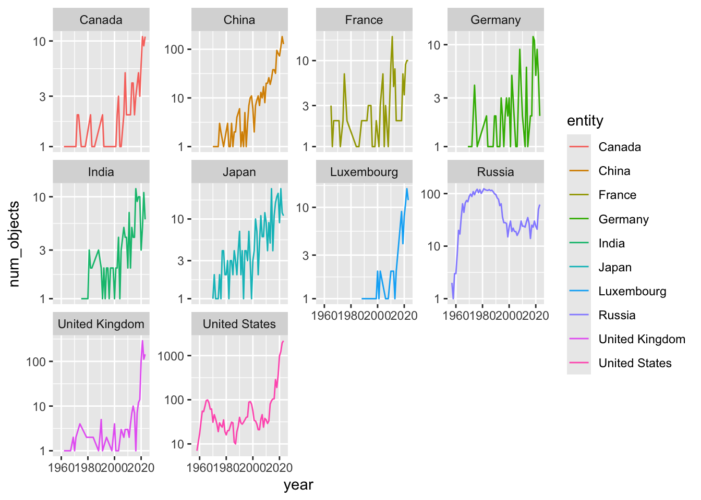
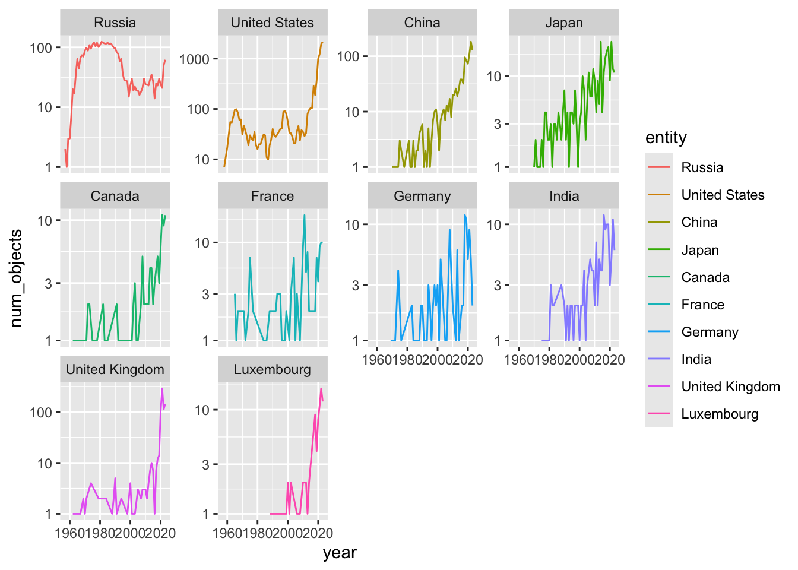
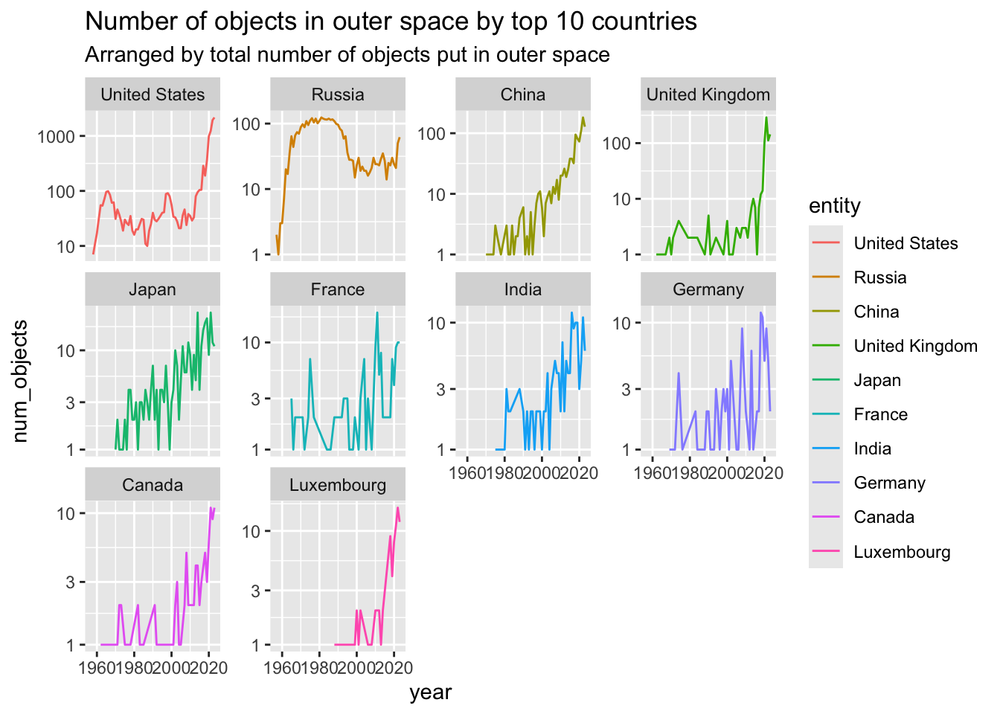

Code
# Option 1: tidytuesdayR package
#install.packages("tidytuesdayR")
library(tidyverse)
library(janitor)Myriam Scansetti
Brendan Clarke
Tricia Govindasamy
Jon Minton
Andrew Saul
Gatz Osorio
Kennedy Owusu-Afriyie
April 26, 2024
The most recent TidyTuesday dataset was taken from Our World In Data, and showed the number of objects launched into space by different entities by year. Myriam led this week’s session.
Downloading file 1 of 1: `outer_space_objects.csv` [1] "APSCO" "Algeria" "Angola"
[4] "Arabsat" "Argentina" "Armenia"
[7] "Australia" "Austria" "Azerbaijan"
[10] "Bangladesh" "Belarus" "Belgium"
[13] "Bhutan" "Bolivia" "Brazil"
[16] "Bulgaria" "Canada" "Chile"
[19] "China" "Colombia" "Costa Rica"
[22] "Czechia" "Denmark" "Djibouti"
[25] "EUMETSAT" "Ecuador" "Egypt"
[28] "Estonia" "Ethiopia" "European Space Agency"
[31] "European Union" "Eutelsat" "Finland"
[34] "France" "Germany" "Ghana"
[37] "Greece" "Guatemala" "Hungary"
[40] "India" "Indonesia" "Inmarsat"
[43] "Intelsat" "Intersputnik" "Iran"
[46] "Ireland" "Israel" "Italy"
[49] "Japan" "Jordan" "Kazakhstan"
[52] "Kenya" "Kuwait" "Laos"
[55] "Latvia" "Lithuania" "Luxembourg"
[58] "Malaysia" "Mauritius" "Mexico"
[61] "Moldova" "Monaco" "Mongolia"
[64] "Morocco" "NATO" "Nepal"
[67] "Netherlands" "New Zealand" "Nigeria"
[70] "North Korea" "Norway" "Pakistan"
[73] "Papua New Guinea" "Paraguay" "Peru"
[76] "Philippines" "Poland" "Portugal"
[79] "Qatar" "RASCOM" "Romania"
[82] "Russia" "Rwanda" "Saudi Arabia"
[85] "Sea Launch" "Singapore" "Slovakia"
[88] "Slovenia" "South Africa" "South Korea"
[91] "Spain" "Sri Lanka" "Starsem"
[94] "Sweden" "Switzerland" "Taiwan"
[97] "Thailand" "Tunisia" "Turkey"
[100] "Turkmenistan" "Uganda" "Ukraine"
[103] "United Arab Emirates" "United Kingdom" "United States"
[106] "Uruguay" "Venezuela" "Vietnam"
[109] "World" "Zimbabwe" We wanted to know what the entities referred to:
[1] "Algeria" "Angola" "Argentina"
[4] "Armenia" "Australia" "Austria"
[7] "Azerbaijan" "Bangladesh" "Belarus"
[10] "Belgium" "Bhutan" "Bolivia"
[13] "Brazil" "Bulgaria" "Canada"
[16] "Chile" "China" "Colombia"
[19] "Costa Rica" "Czechia" "Denmark"
[22] "Djibouti" "Ecuador" "Egypt"
[25] "Estonia" "Ethiopia" "Finland"
[28] "France" "Germany" "Ghana"
[31] "Greece" "Guatemala" "Hungary"
[34] "India" "Indonesia" "Iran"
[37] "Ireland" "Israel" "Italy"
[40] "Japan" "Jordan" "Kazakhstan"
[43] "Kenya" "Kuwait" "Laos"
[46] "Latvia" "Lithuania" "Luxembourg"
[49] "Malaysia" "Mauritius" "Mexico"
[52] "Moldova" "Monaco" "Mongolia"
[55] "Morocco" "Nepal" "Netherlands"
[58] "New Zealand" "Nigeria" "North Korea"
[61] "Norway" "Pakistan" "Papua New Guinea"
[64] "Paraguay" "Peru" "Philippines"
[67] "Poland" "Portugal" "Qatar"
[70] "Romania" "Russia" "Rwanda"
[73] "Saudi Arabia" "Singapore" "Slovakia"
[76] "Slovenia" "South Africa" "South Korea"
[79] "Spain" "Sri Lanka" "Sweden"
[82] "Switzerland" "Taiwan" "Thailand"
[85] "Tunisia" "Turkey" "Turkmenistan"
[88] "Uganda" "Ukraine" "United Arab Emirates"
[91] "United Kingdom" "United States" "Uruguay"
[94] "Venezuela" "Vietnam" "World"
[97] "Zimbabwe" Generally, when an entity has a ‘code’, it is a country (though contains some other aggregations, like whole world, as well)
# A tibble: 97 × 1
Entity
<chr>
1 Zimbabwe
2 World
3 Vietnam
4 Venezuela
5 Uruguay
6 United States
7 United Kingdom
8 United Arab Emirates
9 Ukraine
10 Uganda
# ℹ 87 more rowsWe decided to use janitor::clean_names to avoid having to remember the case of columns.
# A tibble: 1,175 × 4
entity code year num_objects
<chr> <chr> <dbl> <dbl>
1 APSCO <NA> 2023 1
2 Algeria DZA 2002 1
3 Algeria DZA 2010 1
4 Algeria DZA 2016 3
5 Algeria DZA 2017 1
6 Angola AGO 2017 1
7 Angola AGO 2022 1
8 Arabsat <NA> 1985 2
9 Arabsat <NA> 1992 1
10 Arabsat <NA> 1996 2
# ℹ 1,165 more rowsHow many objects released into space by the world by year?

We thought maybe there’s been, and been periods of, exponential growth, so looked at this with a log y scale too:

Here it’s more obvious there were broadly two ‘regimens’ globally of objects released into space.
Which countries released most objects into space over the whole period covered by the dataset?
[1] "United States" "Russia" "China" "United Kingdom"
[5] "Japan" "France" "India" "Germany"
[9] "Canada" "Luxembourg" For these top 10 countries, we decided to look at trends over time:

Tricia suggested we ordered these facets by the total number of objects released over the whole period. For this we used the forcats package, with a bit of trial and error.
# This use of fct_reorder looks like it's worked, but it hasn't
outer_space_objects %>%
filter(entity %in% top_10) %>%
mutate(entity = fct_reorder(entity, num_objects, .desc = TRUE)) %>%
ggplot(aes(x = year, y =num_objects, colour = entity))+
geom_line()+
scale_y_log10()+
facet_wrap(~entity, scales = "free_y")
This version looks initially that it’s worked, but it hasn’t. We can confirm this with the following:
# A tibble: 10 × 2
entity num_objects
<chr> <dbl>
1 United States 9632
2 Russia 3723
3 China 1051
4 United Kingdom 765
5 Japan 325
6 France 151
7 India 144
8 Germany 120
9 Canada 102
10 Luxembourg 86So we use group_by but with mutate, not summarise, to create the total_num_objects column, which is then used by fct_reorder to create something that can be faceted correctly
outer_space_objects %>%
filter(entity %in% top_10) %>%
group_by(entity) %>%
mutate(total_num_objects = sum(num_objects)) %>%
ungroup() %>%
mutate(entity = fct_reorder(entity, total_num_objects, .desc = TRUE)) %>%
ggplot(aes(x = year, y =num_objects, colour = entity))+
geom_line()+
scale_y_log10()+
facet_wrap(~entity, scales = "free_y") +
labs(
title = "Number of objects in outer space by top 10 countries",
subtitle = "Arranged by total number of objects put in outer space"
)
We can see, for example, that China, Japan and India’s number of objects sent into space has been growing exponentially for a long time. The USA, and UK, appear to be having more of a recent exponential growth spurt. Russia’s object release rate declined with the collapse of the USSR.